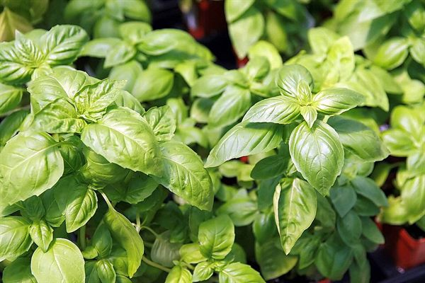
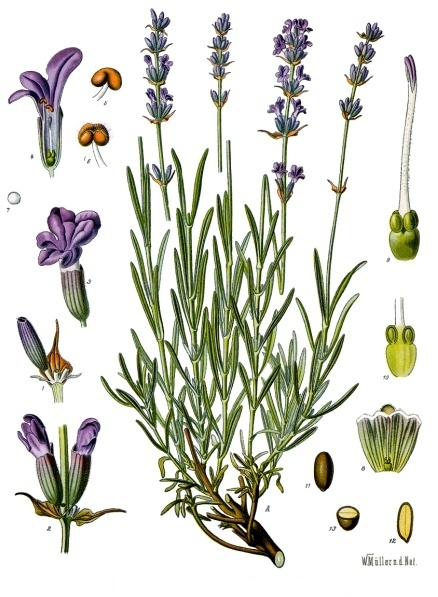
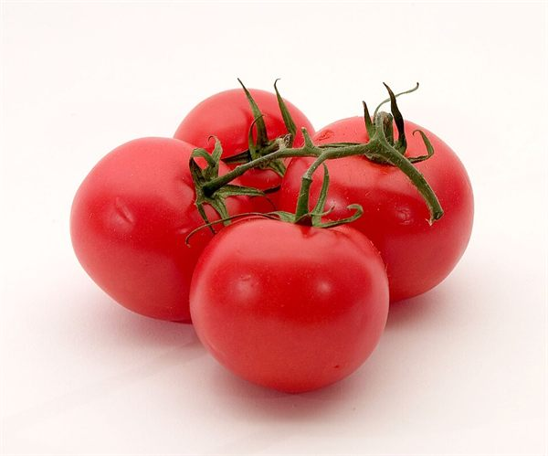
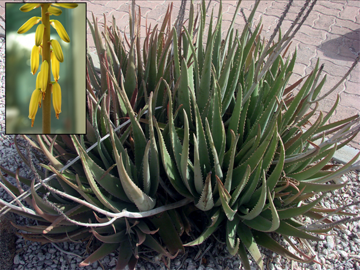
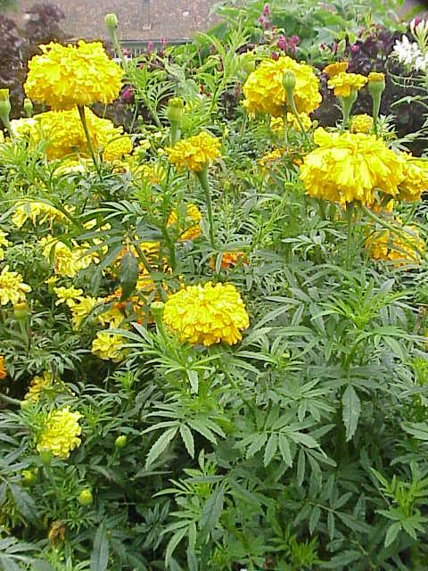

Light
The single biggest factor. Measure your space for a day before buying anything — “bright indirect” is a real, measurable thing.
From the first pot on a windowsill to a garden that feeds you — soil, light, watering and every plant you choose, explained simply.
Gardening is not one skill — it is a handful of small, repeatable habits. Pick the door that matches you today.

Level 01 · BeginnerUnderstand light and water, pick a forgiving first plant, and learn the four-week routine that keeps it alive.
Start the basics → Level 02 · ImprovingFix the root of most problems: soil. Learn texture, pH, drainage, compost and how to read a plant's signals.
Master the soil →
Level 03 · AdvancedPropagation, pruning technique, integrated pest management, composting systems and growing under cover.
Go deeper →Nearly every plant problem traces back to one of these six things.
The single biggest factor. Measure your space for a day before buying anything — “bright indirect” is a real, measurable thing.
More plants die from kindness than neglect. Learn the finger test, the weight test, and why drainage holes are non-negotiable.
Soil is alive. Texture decides drainage, pH decides nutrients, and organic matter decides everything else. Build it and the rest follows.
A sun-loving rose in a dark hallway will always struggle. Match the plant to the conditions you actually have.
Small, regular actions beat heroic rescues: a weekly check, a seasonal prune, a monthly feed during growth.
Plants run on a calendar. Sow at the right time and half the work disappears. Use the seasonal planner to stay ahead.
You do not need a garden. A windowsill, a balcony or one pot by a door is enough to begin.
Watch one spot for a day. Direct sun for 6+ hours is “full sun”; bright but never direct is “indirect”. Write it down.
Snake plant, pothos, mint or marigold. Success with one beats a shelf of casualties.
A pot with holes, a saucer, and a loose potting mix. Never fill a decorative pot that has no drainage.
Push a finger 3 cm into the soil. Dry? Water until it runs out the bottom. Damp? Wait.
New leaf, yellowing, tiny insects — problems are easy to fix when caught in week one.
Survives low light, missed waterings and dry air. The best first houseplant, full stop.

VegetablesThe gateway crop. Give it sun, a stake and steady water, and you will never buy a supermarket tomato again.
Turns a bare wall or balcony rail into a scented screen in one season.
Big, sculptural leaves that make any room feel like a greenhouse — and a moss pole keeps it upright.

SucculentsNearly impossible to kill. Let the soil dry out completely between deep waterings.

FlowersNon-stop colour all summer, and its scent helps keep pests away from nearby vegetables.
Tick off the starter tasks, save plants you like, and keep your notes in one place. Everything is stored privately in your browser.